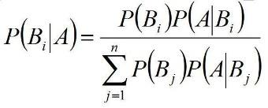
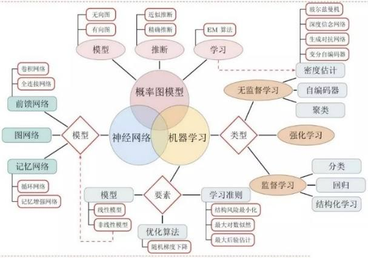
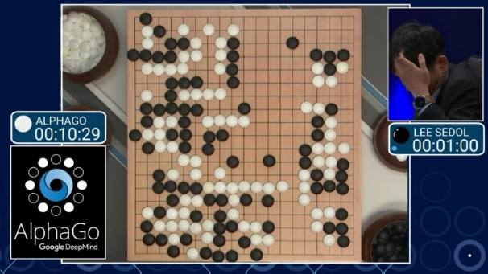
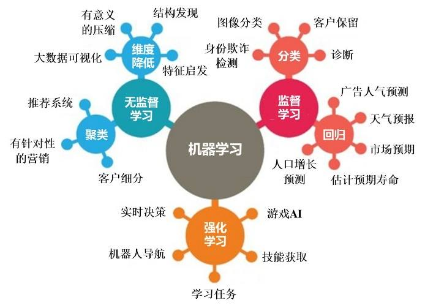
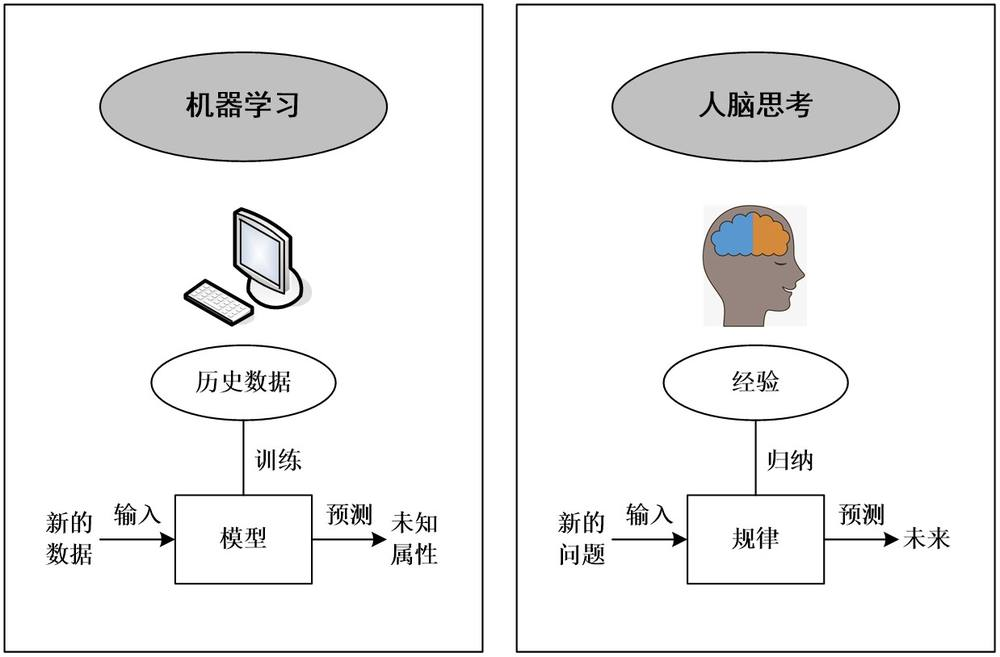
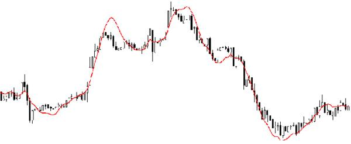
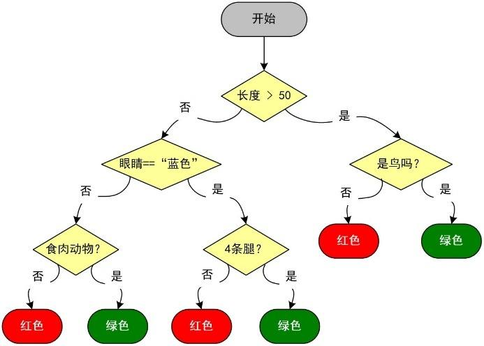
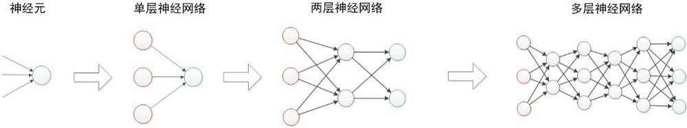
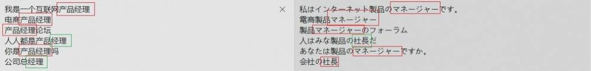

第 1 页 · 数智人才培养

数智人才培养
AI通识精品系列
周苏 教授 QQ：81505050
人工智能通识教程

第 2 页 · 第5章
第5章
周苏 教授 QQ：81505050
传统机器学习


第 3 页 · 机器学习是一种人工智能技术，它是计算机具有智能的根本途径，使计算机能够在不进行明确编程的情况下从数据中学习并改进其性能。
机器学习是一种人工智能技术，它是计算机具有智能的根本途径，使计算机能够在不进行明确编程的情况下从数据中学习并改进其性能。通过使用算法解析数据、识别模式并做出预测或决策，机器学习能够自动适应新的数据，并在多种应用场景中提供智能支持，如图像识别、自然语言处理（NLP）和推荐系统等。
其实质是让计算机利用经验（数据）来优化特定任务的执行策略，进而实现智能化的行为。
第5章 传统机器学习
第 4 页 · 第5章 传统机器学习
第5章 传统机器学习
| 概念 | 关系说明 |
| 人工智能 AI | 最大集合，目标让机器模拟人类智能 |
| 机器学习 | 人工智能的分支，让机器从数据经验自动学习模型 |
| 深度学习 | 机器学习的子集，多层神经网络 |
| 数据挖掘 | 多使用机器学习算法，从海量数据挖掘有用规律 |
第 5 页 · 01

01
什么是
机器学习
02
基于学习
方式的分类
03
机器学习
的基本结构
04
机器学习
算法
目录 / CONTENTS
05
机器学习
的应用
第 6 页 · PART 01
PART 01
什么是机器学习
第 7 页 · 传统的机器学习方法涉及到概率论、统计学、逼近论、凸分析、算法复杂度理论等多学科知识，专门研究计算机怎样模拟或实现人类的学
传统的机器学习方法涉及到概率论、统计学、逼近论、凸分析、算法复杂度理论等多学科知识，专门研究计算机怎样模拟或实现人类的学习行为，以获取新的知识或技能，重新组织已有的知识结构使之不断改善自身的性能。
5.1 什么是机器学习
| 对比项 | 传统手工编程 | 机器学习 |
| 规则来源 | 人手写全部 if-else 规则 | 机器从历史数据自动学习得到规则 |
| 输入 | 数据 + 人工写死规则 | 数据 + 已经存在的结果标签（经验） |
| 输出 | 按照固定规则输出结果 | 对全新未知数据做预测 |
| 局限 | 复杂场景规则写不全 | 高度依赖数据质量 |
第 8 页 · 机器学习的历史最早可以追溯到英国数学家贝叶斯（1702年~1761年）在1763年发表的贝叶斯定理，这是关于随机事件A和
机器学习的历史最早可以追溯到英国数学家贝叶斯（1702年~1761年）在1763年发表的贝叶斯定理，这是关于随机事件A和B的条件概率（或边缘概率）的一则数学定理，是机器学习的基本思想。其中，P(A | B) 是指在B发生的情况下A发生的可能性，即根据以前的信息寻找最可能发生的事件。
5.1.1 机器学习的发展

第 9 页 · 从1950年图灵提议建立一个学习机器，到2000年初深度学习的实际应用及进展，机器学习有了很大的进展。不同时期的研究途径
从1950年图灵提议建立一个学习机器，到2000年初深度学习的实际应用及进展，机器学习有了很大的进展。不同时期的研究途径和目标并不相同，大体上可以划分为4个阶段。
第一阶段是20世纪50年代中叶到60年代中叶，属于热烈时期。主要研究“有无知识的学习”，关注系统的执行能力。这个时期，通过对机器的环境及其相应性能参数的改变来检测系统所反馈的数据，系统受到程序的影响而改变自身的组织，最后会选择一个最优的环境生存。这个时期最具代表性的研究是塞缪特的下棋程序。
5.1.1 机器学习的发展
第 10 页 · 第二阶段从20世纪60年代中叶到70年代中叶，称为冷静时期。主要研究将各领域的专家知识植入到系统里，通过机器模拟人类学习
第二阶段从20世纪60年代中叶到70年代中叶，称为冷静时期。主要研究将各领域的专家知识植入到系统里，通过机器模拟人类学习的过程，同时采用图结构及逻辑结构方面的知识进行系统描述。
这一阶段主要是用各种符号来表示机器语言，取得了一定的成效。具有代表性的工作有海耶斯—罗斯等的对结构学习系统方法。
5.1.1 机器学习的发展
第 11 页 · 第三阶段从20世纪70年代中叶到80年代中叶，称为复兴时期。在此期间，人们从学习单个概念扩展到学习多个概念，探索不同的学
第三阶段从20世纪70年代中叶到80年代中叶，称为复兴时期。在此期间，人们从学习单个概念扩展到学习多个概念，探索不同的学习策略和方法，开始把学习系统与各种应用结合起来，并取得很大的成功。
同时，专家系统在知识获取方面的需求也极大地刺激了机器学习的研究和发展。在出现第一个专家学习系统之后，示例归纳学习系统成为研究的主流，自动知识获取成为机器学习应用的研究目标。
5.1.1 机器学习的发展
第 12 页 · 1980年，在美国的卡内基—梅隆大学（CMU）召开了第一届机器学习国际研讨会，标志着机器学习研究已在全世界兴起。此后，机
1980年，在美国的卡内基—梅隆大学（CMU）召开了第一届机器学习国际研讨会，标志着机器学习研究已在全世界兴起。此后，机器学习开始得到大量的应用。1984年，西蒙等20多位人工智能专家共同撰文编写的机器学习文集第二卷出版，国际性杂志《机器学习》创刊，更加显示出机器学习突飞猛进的发展趋势。这一阶段代表性的工作有莫斯托的指导式学习、莱纳特的数学概念发现程序、兰利的BACON程序及其改进程序。
5.1.1 机器学习的发展
第 13 页 · 第四阶段起步于20世纪80年代中叶，机器学习的这个新阶段具有如下特点：
第四阶段起步于20世纪80年代中叶，机器学习的这个新阶段具有如下特点：
（1）机器学习成为新的边缘学科，它综合应用了心理学、生物学、神经生理学、数学、自动化和计算机科学等形成了机器学习理论基础。
（2）融合各种学习方法，且形式多样的集成学习系统研究正在兴起（见图5-1）。特别是连接符号的学习耦合可以更好地解决连续性信号处理中知识与技能的获取与求精问题而受到重视。
5.1.1 机器学习的发展
第 14 页 · 图5-1 机器学习融合了各种学习方法

图5-1 机器学习融合了各种学习方法
5.1.1 机器学习的发展
第 15 页 · （3）机器学习与人工智能各种基础问题的统一性观点正在形成。例如学习与问题求解结合进行、知识表达便于学习的观点产生了通用智
（3）机器学习与人工智能各种基础问题的统一性观点正在形成。例如学习与问题求解结合进行、知识表达便于学习的观点产生了通用智能系统的组块学习。类比学习与问题求解结合的基于案例方法已成为经验学习的重要方向。
（4）各种学习方法应用范围不断扩大。归纳学习知识获取工具在诊断专家系统中广泛使用，连接学习在声图文识别中占优势，分析学习用于设计型专家系统，遗传算法与强化学习在工程控制中有较好应用，与符号系统耦合的深度学习在智能管理与智能机器人运动规划中发挥作用。
5.1.1 机器学习的发展
第 16 页 · （5）与机器学习有关的学术活动空前活跃。国际上除每年举行的机器学习研讨会外，还有计算机学习理论会议以及遗传算法会议。
（5）与机器学习有关的学术活动空前活跃。国际上除每年举行的机器学习研讨会外，还有计算机学习理论会议以及遗传算法会议。
机器学习在1997年达到巅峰，当时，IBM深蓝计算机在一场国际象棋比赛中击败了世界冠军加里·卡斯帕罗夫。之后，谷歌开发专注于围棋游戏的AlphaGo，尽管围棋被认为过于复杂，
但2016年AlphaGo终于获得胜利，在一场
五局比赛中击败世界冠军李世石。
图5-2 AlphaGo在围棋赛中击败李世石
5.1.1 机器学习的发展

第 17 页 · 5.1.1 机器学习的发展
5.1.1 机器学习的发展
| 阶段 | 时间 | 核心特点 | 代表性成果 |
| 热烈时期 | 20 世纪 50-60 年代中叶 | 研究无知识的学习，侧重系统执行能力 | 塞缪尔跳棋程序；机器自我博弈，能力可超过设计者 |
| 冷静时期 | 20 世纪 60-70 年代中叶 | 符号逻辑学习，植入专家知识；处理噪声数据能力弱，热度下降 | 结构学习系统，符号化知识描述 |
| 复兴时期 | 20 世纪 70-80 年代中叶 | 从单个概念拓展到多概念学习；示例归纳学习兴起 | 1980 第一届机器学习国际研讨会；BACON 发现程序 |
| 新阶段 | 20 世纪 80 年代中叶以后 | 多学科交叉，多种学习方法融合；大量落地应用 | 深蓝（国际象棋）、AlphaGo（围棋） |
第 18 页 · 学习是人类具有的一种重要的智能行为，而机器学习是一个多学科交叉的领域，涵盖概率论知识，统计学知识，近似理论知识和复杂算法
学习是人类具有的一种重要的智能行为，而机器学习是一个多学科交叉的领域，涵盖概率论知识，统计学知识，近似理论知识和复杂算法知识，使用计算机作为工具并致力于真实实时的模拟人类学习方式，并将现有内容进行知识结构划分来有效提高学习效率。
兰利（1996）的定义是：“机器学习是一门人工智能的科学，该领域的主要研究对象是人工智能，特别是如何在经验学习中改善具体算法的性能。”
5.1.2 机器学习的定义
第 19 页 · 汤姆·米切尔（1997）对信息论中的一些概念有详细的解释，其中定义机器学习时提到：“机器学习是对能通过经验自动改进的计算
汤姆·米切尔（1997）对信息论中的一些概念有详细的解释，其中定义机器学习时提到：“机器学习是对能通过经验自动改进的计算机算法的研究。”
阿尔帕丁（2004）对机器学习的定义：“机器学习是用数据或以往的经验，以此优化计算机程序的性能标准。”
顾名思义，机器学习是研究如何使用机器来模拟人类学习活动的一门学科。较为严格的提法是：机器学习是一门研究机器获取新知识和新技能，并识别现有知识的学问。这里所说的“机器”，指的就是计算机，电子计算机，中子计算机、光子计算机或神经计算机等等。
5.1.2 机器学习的定义
第 20 页 · 机器能否像人类一样具有学习能力？机器的能力是否能超过人的，很多持否定意见的人的一个主要论据是：机器是人造的，其性能和动作
机器能否像人类一样具有学习能力？机器的能力是否能超过人的，很多持否定意见的人的一个主要论据是：机器是人造的，其性能和动作完全是由设计者规定的，因此无论如何其能力也不会超过设计者本人。这种意见对不具备学习能力的机器来说的确是对的，可是对具备学习能力的机器就值得考虑了，因为这种机器的能力在应用中不断地提高，过一段时间之后，设计者本人也不知它的能力到了何种水平。
5.1.2 机器学习的定义
第 21 页 · 由汤姆·米切尔给出的机器学习定义得到了广泛引用，其内容是：“计算机程序可以在给定某种类别的任务T和性能度量P下学习经验E
由汤姆·米切尔给出的机器学习定义得到了广泛引用，其内容是：“计算机程序可以在给定某种类别的任务T和性能度量P下学习经验E，如果其在任务T中的性能恰好可以用P度量，则随着经验E而提高。”我们用简单的例子来分解这个描述。
示例：台风预测系统。假设你要构建一个台风预测系统，手里有以前发生过的所有台风的数据和这次台风产生前三个月的天气信息。如果要手动构建一个台风预测系统，我们应该怎么做？
5.1.2 机器学习的定义
第 22 页 · 首先是清洗所有的数据，找到数据里面的模式进而查找产生台风的条件。我们既可以将模型条件数据（例如气温高于40℃，湿度在80
首先是清洗所有的数据，找到数据里面的模式进而查找产生台风的条件。我们既可以将模型条件数据（例如气温高于40℃，湿度在80%~100%等）输入到系统里面生成输出，也可以让系统自己通过这些条件数据产生合适的输出。可以把所有以前的数据输入到系统里面来预测未来是否会有台风。基于系统条件的取值，评估系统性能（正确预测台风的次数）。可以将系统预测结果作为反馈继续多次迭代以上步骤。
5.1.2 机器学习的定义
第 23 页 · 根据米切尔的解释来定义这个预测系统：任务是确定可能产生台风的气象条件。性能P是在系统所有给定的条件下有多少次正确预测台风
根据米切尔的解释来定义这个预测系统：任务是确定可能产生台风的气象条件。性能P是在系统所有给定的条件下有多少次正确预测台风，经验E是系统的迭代次数。
米切尔 T-E-P 模型。经验 E 是历史台风气象数据，任务 T 预测台风，性能 P 看预测正确率。数据质量直接决定模型效果。
5.1.2 机器学习的定义
第 24 页 · PART 02
PART 02
基于学习方式的分类
第 25 页 · 机器学习的核心是“使用算法解析数据，从中学习，然后对世界上的某件事情做出决定或预测”。这意味着，与
机器学习的核心是“使用算法解析数据，从中学习，然后对世界上的某件事情做出决定或预测”。这意味着，与
其显式地编写程序来执行某些任务，
不如教计算机学会如何开发一个算法
来完成任务。机器学习有三种主要类
型，即监督学习、无监督学习和强化
学习。
5.2 基于学习方式的分类

第 26 页 · 机器学习使用特定的算法和编程方法来实现人工智能。有了机器学习，我们可以将代码量缩小到以前的一小部分。
机器学习使用特定的算法和编程方法来实现人工智能。有了机器学习，我们可以将代码量缩小到以前的一小部分。
作为现代机器学习的子集：强化学习是指以环境反馈（奖/惩信号）作为输入，以统计和动态规划技术为指导的一种学习方法；深度学习则专注于模仿人类大脑的生物学和过程。
5.2 基于学习方式的分类
第 27 页 · 监督学习是指输入数据中有导师信号，以概率函数、代数函数或人工神经网络为基函数模型，采用迭代计算方法，学习结果为函数。
监督学习是指输入数据中有导师信号，以概率函数、代数函数或人工神经网络为基函数模型，采用迭代计算方法，学习结果为函数。
监督学习涉及一组标记数据，计算机可以使用特定的模式来识别每种标记类型的新样本，即在机器学习过程中提供对错指示，一般是在数据组中包含最终结果 (0, 1)。通过算法让机器自我减少误差。监督学习从给定的训练数据集中学习出一个函数，当接收到一个新的数据时，可以根据这个函数预测结果。监督学习的训练集要求包括输入和输出，也可以说是特征和目标，目标是由人标注的。监督学习的主要类型是分类和回归。
5.2.1 监督学习
第 28 页 · 在分类中，机器被训练成将一个组划分为特定的类，一个简单例子就是电子邮件中的垃圾邮件过滤器。过滤器分析你以前标记为垃圾邮件
在分类中，机器被训练成将一个组划分为特定的类，一个简单例子就是电子邮件中的垃圾邮件过滤器。过滤器分析你以前标记为垃圾邮件的电子邮件，并将它们与新邮件进行比较，如果它们有一定的百分比匹配，这些新邮件将被标记为垃圾邮件并发送到适当的文件夹中。
在回归中，机器使用先前的（标记的）数据来预测未来，天气应用是回归的好例子。使用气象事件的历史数据（即平均气温、湿度和降水量），手机天气预报APP可以查看当前天气，并对未来时间的天气进行预测。
5.2.1 监督学习
第 29 页 · 无监督学习又称无导师学习、归纳性学习，是指输入数据中无导师信号，采用聚类方法，学习结果为类别。
无监督学习又称无导师学习、归纳性学习，是指输入数据中无导师信号，采用聚类方法，学习结果为类别。
典型的无导师学习有发现学习、聚类、竞争学习等。无监督学习通过循环和递减运算来减小误差，达到分类的目的。
在无监督学习中，数据是无标签的。由于大多数真实世界的数据都没有标签，这样的算法就特别有用。无监督学习分为聚类和降维。聚类用于根据属性和行为对象进行分组。这与分类不同，因为这些组不是你提供的。
5.2.2 无监督学习
第 30 页 · 聚类的一个例子是将一个组划分成不同的子组（例如，基于年龄和婚姻状况），然后应用到有针对性的营销方案中。降维通过找到共同点
聚类的一个例子是将一个组划分成不同的子组（例如，基于年龄和婚姻状况），然后应用到有针对性的营销方案中。降维通过找到共同点来减少数据集的变量。大多数大数据可视化使用降维来识别趋势和规则。
5.2.2 无监督学习
第 31 页 · 5.2.2 无监督学习
5.2.2 无监督学习
| 学习类型 | 是否有标签 | 核心思想 | 典型任务 | 课本算法例子 | 现实案例 |
| 监督学习（有导师） | 有标签 / （标准答案） | 给机器 “习题 + 参考答案”，学习输入到输出映射 | 分类、回归 | 决策树、朴素贝叶斯、KNN | 垃圾邮件识别；房价预测；西瓜好坏判别 |
| 无监督学习 / （无导师） | 无标签 | 不给标准答案，机器挖掘数据内在结构 | 聚类、降维 | K-means 聚类 | 客户自动分群；数据可视化降维 |
| 强化学习 | 无现成标签 | 和环境交互，试错学习；奖励加分、惩罚扣分，最大化总奖励 | 实时决策 | 强化学习算法 | 游戏 AI、机器人导航、AlphaGo 自我博弈 |
第 32 页 · 5.2.2 无监督学习
5.2.2 无监督学习
| 对比项 | 无监督学习 | 强化学习 |
| 学习素材 | 静态、已经收集好的数据集 | 智能体和动态环境实时交互 |
| 信号来源 | 无标签，没有奖励 / 惩罚 | 没有标签，依靠奖励、惩罚信号 |
| 学习目标 | 挖掘数据内在结构（分组、降维） | 学习行动策略，最大化长期累积奖励 |
| 有没有动作 | 模型不产生动作，只分析已有数据 | 智能体持续输出动作，改变环境 |
| 典型算法 | K-means 聚类、PCA 降维 | Q-learning、DQN |
| 典型案例 | 用户分群、数据降维可视化 | 机器人行走、游戏 AI、AlphaGo 自我博弈 |
无监督学习：在一堆静态历史数据里找内在规律；
强化学习：智能体和环境持续交互，边试错边学习。
第 33 页 · PART 03
PART 03
机器学习的基本结构
第 34 页 · 机器学习的基本流程是：数据预处理—>模型学习—>模型评估—>新样本预测。机器学习与人脑思考过程的对
机器学习的基本流程是：数据预处理—>模型学习—>模型评估—>新样本预测。机器学习与人脑思考过程的对
比如下图所示。
图5-4 机器学习与人脑思维的对比
5.3 机器学习的基本结构

第 35 页 · 在学习系统的基本结构中，环境向系统的学习部分提供某些信息，学习部分利用这些信息修改知识库，以增进系统执行部分完成任务的效
在学习系统的基本结构中，环境向系统的学习部分提供某些信息，学习部分利用这些信息修改知识库，以增进系统执行部分完成任务的效能，执行部分根据知识库完成任务，同时把获得的信息反馈给学习部分。
在具体的应用中，环境、知识库和执行部分决定了工作内容，确定了学习部分所需要解决的问题。
5.3 机器学习的基本结构
第 36 页 · （1）环境。向系统提供信息，更具体地说，信息的质量是影响学习系统设计的最重要的因素。知识库里存放的是指导执行部分动作的一
（1）环境。向系统提供信息，更具体地说，信息的质量是影响学习系统设计的最重要的因素。知识库里存放的是指导执行部分动作的一般原则，但环境向学习系统提供的信息却是各种各样的。如果信息的质量比较高，与一般原则的差别比较小，则学习部分比较容易处理。如果向学习系统提供的是杂乱无章的指导执行具体动作的具体信息，则学习系统需要在获得足够数据之后，删除不必要的细节，进行总结推广，形成指导动作的一般原则，放入知识库，这样学习部分的任务就比较繁重，设计起来也较为困难。
5.3 机器学习的基本结构
第 37 页 · 因为学习系统获得的信息往往是不完全的，所以学习系统所进行的推理并不完全是可靠的，它总结出来的规则可能正确，也可能不正确，
因为学习系统获得的信息往往是不完全的，所以学习系统所进行的推理并不完全是可靠的，它总结出来的规则可能正确，也可能不正确，这要通过执行效果加以检验。正确的规则能使系统的效能提高，应予保留；不正确的规则应予修改或从数据库中删除。
5.3 机器学习的基本结构
第 38 页 · （2）知识库。这是影响学习系统设计的第二个因素。知识的表示有多种形式，比如特征向量、一阶逻辑语句、产生式规则、语义网络和
（2）知识库。这是影响学习系统设计的第二个因素。知识的表示有多种形式，比如特征向量、一阶逻辑语句、产生式规则、语义网络和框架等等。这些表示方式各有其特点，在选择表示方式时要兼顾的4个方面是：表达能力强、易于推理、容易修改知识库以及知识表示易于扩展。
学习系统不能在没有任何知识的情况下凭空获取知识，每一个学习系统都要求具有某些知识理解环境提供的信息，分析比较，做出假设，检验并修改这些假设。因此，更确切地说，学习系统是对现有知识的扩展和改进。
5.3 机器学习的基本结构
第 39 页 · （3）执行部分。是整个学习系统的核心，因为执行部分的动作就是学习部分力求改进的动作。同执行部分有关的问题有3个：复杂性、
（3）执行部分。是整个学习系统的核心，因为执行部分的动作就是学习部分力求改进的动作。同执行部分有关的问题有3个：复杂性、反馈和透明性。
5.3 机器学习的基本结构
| 组成部分 | 作用 | 关键点 |
| 环境 | 提供训练信息（数据集） | 信息质量直接决定模型效果 |
| 知识库 | 存放学到知识、规则、模型 | 会迭代更新，不是一成不变 |
| 执行部分 | 完成实际任务，带回反馈 | 反馈回路是机器学习迭代的关键 |
第 40 页 · PART 04
PART 04
机器学习算法
第 41 页 · 学习是一项复杂的智能活动，学习过程与推理过程是紧密相连的。学习中所用的推理越多，系统的能力越强。要完全理解大多数机器学习
学习是一项复杂的智能活动，学习过程与推理过程是紧密相连的。学习中所用的推理越多，系统的能力越强。要完全理解大多数机器学习算法，需要对一些关键的数学概念有一个基本的理解，这些概念主要包括线性代数、微积分、概率和统计知识。
（1）线性代数：矩阵运算、特征值/特征向量、向量空间和范数。
（2）微积分：偏导数、向量—值函数、方向梯度。
（3）统计：贝叶斯定理、组合学、抽样方法。
5.4 机器学习算法
第 42 页 · 回归分析是一种建模和分析数据的预测性建模技术重要工具，它研究的是因变量（目标）和自变量（预测器）之间的关系，通常用于预测

回归分析是一种建模和分析数据的预测性建模技术重要工具，它研究的是因变量（目标）和自变量（预测器）之间的关系，通常用于预测分析、时间序列模型以及发现变量之间的因果关系，我们使用曲线/线来拟合这些数据点，在这种方式下，从曲线或线到数据点的距离差异最小。例如，驾驶员的鲁莽驾驶与道路交通事故数量之间的关系，最好的研究方法就是回归。回归分析主要有线性回归、逻辑回归、多项式回归、
逐步回归、岭回归、套索回归、弹性网络
回归等7种常用技术。
图5-5 回归分析的曲线拟合
5.4.1 回归算法
第 43 页 · 比如说，在当前的经济条件下，我们要估计一家公司的销售额增长情况。现在，你有公司最新的数据，这些数据显示出销售额增长大约是
比如说，在当前的经济条件下，我们要估计一家公司的销售额增长情况。现在，你有公司最新的数据，这些数据显示出销售额增长大约是经济增长的2.5倍。那么使用回归分析，我们就可以根据当前和过去的信息来预测未来公司的销售情况。
5.4.1 回归算法
第 44 页 · 使用回归分析的好处良多。具体如下：
使用回归分析的好处良多。具体如下：
（1）它表明自变量和因变量之间的显著关系；
（2）它表明多个自变量对一个因变量的影响强度。
回归分析也允许我们去比较那些衡量不同尺度的变量之间的相互影响，如价格变动与促销活动数量之间联系。这些有利于帮助市场研究人员，数据分析人员以及数据科学家排除并估计出一组最佳的变量，构建预测模型。
5.4.1 回归算法
第 45 页 · K-近邻（KNN）算法是最著名的基于实例的算法，是机器学习中最基础和简单的算法之一，它既能用于分类，也能用于回归。
K-近邻（KNN）算法是最著名的基于实例的算法，是机器学习中最基础和简单的算法之一，它既能用于分类，也能用于回归。
KNN算法有一个十分特别的地方：没有一个显示的学习过程，工作原理是利用训练数据对特征向量空间进行划分，并将其划分的结果作为其最终的算法模型。即基于实例的分析使用提供数据的特定实例来预测结果。KNN用于分类，比较数据点的距离，并将每个点分配给它最接近的组。
5.4.2 K-近邻算法
第 46 页 · 决策树算法将一组“弱”学习器集合在一起，形成一种强算法，这些学习器组织在树状结构中相互分支，将输入空间分成不同的区域，每
决策树算法将一组“弱”学习器集合在一起，形成一种强算法，这些学习器组织在树状结构中相互分支，将输入空间分成不同的区域，每个区域有独立参数的算法。
决策树算法充分利用了树形模型，根节点到一个叶子节点是一条分类的路径规则，每个叶子节点象征一个判断类别。先将样本分成不同的子集，再进行分割递推，直至每个子集得到同类型的样本，从根节点开始测试，到子树再到叶子节点，即可得出预测类别。此方法的特点是结构简单、处理数据效率较高。
5.4.3 决策树算法
第 47 页 · 在下图所示的例子中，我们可以发现许多共同的特征（就像眼睛是蓝的或者不是蓝色的），它们都不足以单独识
在下图所示的例子中，我们可以发现许多共同的特征（就像眼睛是蓝的或者不是蓝色的），它们都不足以单独识
别动物。然而，当我们把所有这些观
察结合在一起时，我们就能形成一个
更完整的画面，并做出更准确的预测。
图5-6 决策树算法
5.4.3 决策树算法

第 48 页 · 一种流行的决策树算法是随机森林算法。在该算法中，弱学习器是随机选择的，通过学习往往可以获得一个强预测器。控制数据树生成的
一种流行的决策树算法是随机森林算法。在该算法中，弱学习器是随机选择的，通过学习往往可以获得一个强预测器。控制数据树生成的方式有多种，根据前人的经验，大多数时候更倾向选择分裂属性和剪枝，但这并不能解决所有问题，偶尔会遇到噪声或分裂属性过多的问题。基于这种情况，总结每次的结果可以得到数据的估计误差，将它和测试样本的估计误差相结合可以评估组合树学习器的拟合及预测精度。此方法的优点有很多，可以产生高精度的分类器，并能够处理大量的变数，也可以平衡分类资料集之间的误差。
5.4.3 决策树算法
第 49 页 · 朴素贝叶斯经常用于文本分析算法，是一种由一系列算法组成的分类算法，各种算法有一个共同的原则，即被分类的每个特征都与任何其
朴素贝叶斯经常用于文本分析算法，是一种由一系列算法组成的分类算法，各种算法有一个共同的原则，即被分类的每个特征都与任何其他特征的值无关，这些“特征”中的每一个都独立地贡献概率，而不管特征之间的任何相关性。
然而，特征并不总是独立的，这通常被视为朴素贝叶斯算法的缺点。简而言之，朴素贝叶斯算法允许使用概率给出一组特征来预测一个类。与其他常见的分类方法相比，朴素贝叶斯算法需要的训练很少。
5.4.4 贝叶斯算法
第 50 页 · 在进行预测之前必须完成的唯一工作是找到特征的个体概率分布的参数，这通常可以快速且确定地完成。
在进行预测之前必须完成的唯一工作是找到特征的个体概率分布的参数，这通常可以快速且确定地完成。
这意味着即使对于高维数据点或大量数据点，朴素贝叶斯分类器也可以表现良好。例如，大多数垃圾邮件过滤器使用贝叶斯算法，它们使用用户输入的类标记数据来比较新数据并对其进行适当分类。
5.4.4 贝叶斯算法
第 51 页 · 聚类算法的重点是发现元素之间的共性并对它们进行相应的分组，常用的聚类算法是k均值聚类算法。
聚类算法的重点是发现元素之间的共性并对它们进行相应的分组，常用的聚类算法是k均值聚类算法。
在k均值中，分析人员选择簇数（以变量k表示），并根据物理距离将元素分组为适当的聚类。
5.4.5 聚类算法
第 52 页 · 支持向量机是统计学习领域中一个代表性算法，但它与传统方式的思维方法很不同，输入空间、提高维度从而将问题简短化，使问题归结
支持向量机是统计学习领域中一个代表性算法，但它与传统方式的思维方法很不同，输入空间、提高维度从而将问题简短化，使问题归结为线性可分的经典解问题。基本思想是：首先，要利用一种变换将空间高维化，当然这种变换是非线性的，然后，在新的复杂空间取最优线性分类表面。由此种方式获得的分类函数在形式上类似于神经网络算法。
支持向量机应用于垃圾邮件识别，人脸识别等多种分类问题。
5.4.6 支持向量机算法
第 53 页 · 人工神经网络与神经元组成的异常复杂的网络大体相似，是个体单元互相连接而成，每个单元有数值量的输入和输出，形式可以为实数或
人工神经网络与神经元组成的异常复杂的网络大体相似，是个体单元互相连接而成，每个单元有数值量的输入和输出，形式可以为实数或线性组合函数（见图5-7）。它先要以一种学习准则去学习，然后才能进行工作。当网络判断错误时，通过学习使其减少犯同样错误的可能性。此方法有很强的泛化能力和非线性映射能力，可以对信息量少的系统进行模型处理。从功能模拟角度看具有并行性，且传递信息速度极快。
5.4.7 神经网络算法
第 54 页 · 图5-7 神经网络算法
图5-7 神经网络算法
5.4.7 神经网络算法

第 55 页 · 深度学习采用神经网络模型并对其进行更新。它们是大、且极其复杂的神经网络，使用少量的标记数据和更多的未标记数据。神经网络和
深度学习采用神经网络模型并对其进行更新。它们是大、且极其复杂的神经网络，使用少量的标记数据和更多的未标记数据。神经网络和深度学习有许多输入，它们经过几个隐藏层后才产生一个或多个输出。这些连接形成一个特定的循环，模仿人脑处理信息和建立逻辑连接的方式。此外，随着算法的运行，隐藏层往往变得更小、更细微。
一旦选定了算法，还有一个非常重要的步骤，就是可视化和交流结果。虽然与算法编程的细节相比，这看起来比较简单，但是，如果没有人能够理解，那么惊人的洞察力又有什么用呢？
5.4.7 神经网络算法
第 56 页 · 5.4.7 神经网络算法
5.4.7 神经网络算法
| 模型 | 属于神经网络 | 隐藏层数 | 是否属于深度学习 |
| 浅层人工神经网络 ANN | 是 | 1-2 层隐藏层 | 不属于深度学习 |
| 深度全连接网络 | 是 | 多层隐藏层 | 深度学习 |
| CNN 卷积网络 | 是 | 多层 | 深度学习（图像） |
| RNN/LSTM 循环网络 | 是 | 多层 | 深度学习（时序文本） |
| Transformer | 是 | 多层自注意力 | 深度学习（大模型底层） |
第 57 页 · 梯度增强（Boosting）算法是一种通用的增强基础算法性能的回归分析算法。不需构造一个高精度的回归分析，只需一个粗糙的
梯度增强（Boosting）算法是一种通用的增强基础算法性能的回归分析算法。不需构造一个高精度的回归分析，只需一个粗糙的基础算法即可，再反复调整基础算法就可以得到较好的组合回归模型。它可以将弱学习算法提高为强学习算法，可以应用到其它基础回归算法，如线性回归、神经网络等，来提高精度。
装袋（Bagging）算法和前一种算法大体相似又略有差别，主要是给出已知的弱学习算法和训练集，它需要经过多轮计算，才可以得到预测函数列，最后采用投票方式对示例进行判别。
5.4.8 梯度增强算法
第 58 页 · 关联规则是用规则去描述两个变量或多个变量之间的关系，是客观反映数据本身性质的方法。
关联规则是用规则去描述两个变量或多个变量之间的关系，是客观反映数据本身性质的方法。
它是机器学习的一大类任务，可分为两个阶段，先从资料集中找到高频项目组，再去研究它们的关联规则。其得到的分析结果即是对变量间规律的总结。
5.4.9 关联规则算法
第 59 页 · 在进行机器学习的过程中需要用到极大似然估计等参数估计方法，在有潜在变量的情况下，通常选择期望最大化（EM）算法，不直接对
在进行机器学习的过程中需要用到极大似然估计等参数估计方法，在有潜在变量的情况下，通常选择期望最大化（EM）算法，不直接对函数对象进行极大估计，而是添加一些数据进行简化计算，再进行极大化模拟。它是对本身受限制或比较难直接处理的数据的极大似然估计算法。
EM算法是最常见的隐变量估计方法，在机器学习中有极为广泛的用途。EM算法是一种迭代优化策略，它的计算方法中每一次迭代都分两步，一个为期望步（E步），另一个为极大步（M步）。
5.4.10 EM（期望最大化）算法
第 60 页 · EM算法最初是为了解决数据缺失情况下的参数估计问题，其基本思想是：首先根据己经给出的观测数据估计出模型参数值；然后依据上
EM算法最初是为了解决数据缺失情况下的参数估计问题，其基本思想是：首先根据己经给出的观测数据估计出模型参数值；然后依据上一步的参数值估计缺失数据值，再将缺失数据加上之前观测到的数据重新再对参数值进行估计，反复迭代，直至最后收敛，迭代结束。
5.4.10 EM（期望最大化）算法
第 61 页 · 幻灯片
| 算法名称 | 所属学习类型 | 核心特点 | 典型应用场景 |
| 回归算法 | 监督学习 | 拟合曲线，输出连续数值预测 | 销售额预测、气温预测 |
| K-近邻 (KNN) | 监督学习 | 物以类聚，找邻近样本投票，可分类 / 回归 | 简单样本分类预测 |
| 决策树 | 监督学习 | 白盒模型，分层 if 判断，可解释；容易过拟合 | 风控判断、分类预测；衍生随机森林 |
| 朴素贝叶斯 | 监督学习 | 基于概率计算 | 垃圾邮件过滤 |
| K-means 聚类 | 无监督学习 | 按相似度自动分组，无标签 | 客户分群、样本分组 |
| 支持向量机 SVM | 监督学习 | 映射至高维空间做分类 | 人脸识别、垃圾邮件识别 |
| 人工神经网络 | 监督学习 | 模仿神经元，黑盒模型；层数加深就是深度学习 | 图像识别、模式识别 |
第 62 页 · PART 05
PART 05
机器学习的应用
第 63 页 · 机械学习的主要目的是为了从使用者和输入数据等处获得知识或技能，重新组织已有的知识结构使之不断改善自身的性能。从而可以减少
机械学习的主要目的是为了从使用者和输入数据等处获得知识或技能，重新组织已有的知识结构使之不断改善自身的性能。从而可以减少错误，帮助解决更多问题，提高解决问题的效率。
例如，机器翻译中最重要的过程是学习人类怎样翻译语言，程序通过阅读大量翻译内容来实现对语言的理解。以汉语与日语来举例，机器学习的原理很简单，当一个相同的词语在几个句子中出现时，只要通过对比日语版本翻译中同样在每个句子中都出现的短语，便可知道它的日语翻译是什么（见图5-8）。
5.5 机器学习的应用
第 64 页 · 图5-8 汉语与日语的对译
图5-8 汉语与日语的对译
按照这种方式不难推测：
（1）“产品经理”一词的日语可翻译为“マネージャー”；
（2）“经理”则一般翻译为“社长”。
5.5 机器学习的应用

第 65 页 · 机器学习在识别词汇时可以不追求完全匹配，只要匹配达到一定比例便可认为这是一种可能的翻译方式。
机器学习在识别词汇时可以不追求完全匹配，只要匹配达到一定比例便可认为这是一种可能的翻译方式。
机器学习应用广泛，无论是在军事领域还是民用领域，都有机器学习算法施展的机会，主要包括以下几个方面。
5.5 机器学习的应用
第 66 页 · “数据挖掘”和“数据分析”通常被相提并论，并在许多场合被认为是可以相互替代的术语。无论是数据分析还是数据挖掘，都是“识别
“数据挖掘”和“数据分析”通常被相提并论，并在许多场合被认为是可以相互替代的术语。无论是数据分析还是数据挖掘，都是“识别出巨量数据中有效的、新颖的、潜在有用的、最终可理解的、模式的非平凡过程”，帮助人们收集、分析数据，使之成为信息并做出判断，因此，可以将这两项合称为数据分析与挖掘。
数据分析与挖掘技术是机器学习算法和数据存取技术的结合，利用机器学习提供的统计分析、知识发现等手段分析海量数据，同时利用数据存取机制实现数据的高效读写。机器学习在数据分析与挖掘领域中拥有无可取代的地位。
5.5.1 数据分析与挖掘
第 67 页 · 模式识别起源于工程领域，而机器学习起源于计算机科学，这两个不同学科的结合带来了模式识别领域的调整和发展。模式识别研究主要
模式识别起源于工程领域，而机器学习起源于计算机科学，这两个不同学科的结合带来了模式识别领域的调整和发展。模式识别研究主要集中在两个方面。
（1）研究生物体（包括人）是如何感知对象的，属于认识科学的范畴。
（2）在给定的任务下，如何用计算机实现模式识别的理论和方法，这些是机器学习的长项，也是机器学习研究的内容之一。
5.5.2 模式识别
第 68 页 · 模式识别的应用领域广泛，包括计算机视觉、医学图像分析、光学文字识别、自然语言处理、语音识别、手写识别、生物特征识别、文件
模式识别的应用领域广泛，包括计算机视觉、医学图像分析、光学文字识别、自然语言处理、语音识别、手写识别、生物特征识别、文件分类、搜索引擎等，而这些领域也正是机器学习大展身手的舞台，因此模式识别与机器学习的关系越来越密切。
5.5.2 模式识别
第 69 页 · 随着基因组和其他测序项目的不断发展，生物信息学研究的重点正逐步从积累数据转移到如何解释这些数据。在未来，生物学的新发现将
随着基因组和其他测序项目的不断发展，生物信息学研究的重点正逐步从积累数据转移到如何解释这些数据。在未来，生物学的新发现将极大地依赖于我们在多个维度和不同尺度下对多样化的数据进行组合和关联的分析能力，而不再仅仅依赖于对传统领域的继续关注。
序列数据将与结构和功能数据基因表达数据、生化反应通路数据表现型和临床数据等一系列数据相互集成。如此大量的数据，在生物信息的存储、获取、处理、浏览及可视化等方面，都对理论算法和软件的发展提出了迫切的需求。
5.5.3 生物信息学应用
第 70 页 · 另外，由于基因组数据本身的复杂性也对理论算法和软件的发展提出了迫切的需求。而机器学习方法例如神经网络、遗传算法、决策树和
另外，由于基因组数据本身的复杂性也对理论算法和软件的发展提出了迫切的需求。而机器学习方法例如神经网络、遗传算法、决策树和支持向量机等正适合于处理这种数据量大、含有噪声并且缺乏统一理论的领域。
借由高功率显微镜和机器学习，美国科学家提出一种新算法，可在整个细胞的超高分辨率图像中快速揭示细胞内部结构，自动识别大约30种不同类型的细胞器和其他结构。
5.5.3 生物信息学应用
第 71 页 · 物联网（IoT），是指家里和办公室里联网的物理设备。流行的物联网设备是智能灯泡，其销售额在过去几年里猛增。
物联网（IoT），是指家里和办公室里联网的物理设备。流行的物联网设备是智能灯泡，其销售额在过去几年里猛增。
随着机器学习的进步，物联网设备比以往任何时候都更聪明、更复杂。机器学习有两个主要的与物联网相关的应用：使你的设备变得更好和收集你的数据。
https://baijiahao.baidu.com/s?id=1712319126482258877&wfr=spider&for=pc
https://zhuanlan.zhihu.com/p/22890907665
5.5.4 物联网
第 72 页 · 让设备变得更好是非常简单的：使用机器学习来个性化您的环境，比如，用面部识别软件来感知哪个是房间，并相应地调整温度和AC。
让设备变得更好是非常简单的：使用机器学习来个性化您的环境，比如，用面部识别软件来感知哪个是房间，并相应地调整温度和AC。
收集数据更加简单，例如通过对你家中保持网络连接的设备（如亚马逊回声）的监测，像亚马逊这样的公司收集关键的人口统计信息，将其传递给广告商，比如电视显示你正在观看的节目、你什么时候醒来或睡觉、有多少人住在你家。
5.5.4 物联网
第 73 页 · 在过去的几年里聊天机器人激增，成熟的语言处理算法每天都在改进它们。聊天机器人被公司用在他们自己的移动应用程序和第三方应用
在过去的几年里聊天机器人激增，成熟的语言处理算法每天都在改进它们。聊天机器人被公司用在他们自己的移动应用程序和第三方应用上，以提供比传统的（人类）代表更快、更高效的虚拟客户服务。
像Siri这样的虚拟助手。顾名思义，当使用语音发出指令后，它们会协助查找信息。对于回答，虚拟助手会查找信息，回忆相关查询，或向其他资源（如电话应用程序）发送命令以收集信息。我们甚至可以指导助手执行某些任务，例如“设置7点的闹钟”等。
5.5.5 聊天机器人
第 74 页 · 过滤垃圾邮件和恶意软件。电子邮件客户端使用了许多垃圾邮件过滤方法。为了确保这些垃圾邮件过滤器能够不断更新，它们使用了机器
过滤垃圾邮件和恶意软件。电子邮件客户端使用了许多垃圾邮件过滤方法。为了确保这些垃圾邮件过滤器能够不断更新，它们使用了机器学习技术。多层感知器和决策树归纳等是由机器学习提供支持的一些垃圾邮件过滤技术。每天检测到超过325000个恶意软件，每个代码与之前版本的90%～98%相似。
由机器学习驱动的系统安全程序理解编码模式。因此，他们可以轻松检测到2%～10%变异的新恶意软件，并提供针对它们的保护。
5.5.5 聊天机器人
第 75 页 · 如今，有不少大型企业正在开发无人驾驶汽车，这些汽车使用了通过机器学习实现导航、维护和安全程序的技术。一个例子是交通标志传
如今，有不少大型企业正在开发无人驾驶汽车，这些汽车使用了通过机器学习实现导航、维护和安全程序的技术。一个例子是交通标志传感器，它使用监督学习算法来识别和解析交通标志，并将它们与一组标有标记的标准标志进行比较。这样，汽车就能看到停车标志，并认识到它实际上意味着停车，而不是转弯，单向或人行横道。
5.5.6 自动驾驶
第 76 页 · 交通预测。生活中我们经常使用卫星导航服务。当我们这样做时，我们当前的位置和速度被保存在中央服务器上来进行流量管理。之后使
交通预测。生活中我们经常使用卫星导航服务。当我们这样做时，我们当前的位置和速度被保存在中央服务器上来进行流量管理。之后使用这些数据用于构建当前流量的映射。通过机器学习可以解决配备卫星导航的汽车数量较少的问题，在这种情况下的机器学习有助于根据估计找到拥挤的区域。
5.5.6 自动驾驶
第 77 页 · 01

01
什么是
机器学习
02
基于学习
方式的分类
03
机器学习
的基本结构
04
机器学习
算法
目录 / CONTENTS
05
机器学习
的应用
第 78 页 · 第5章
第5章
周苏 教授 QQ：81505050
传统机器学习